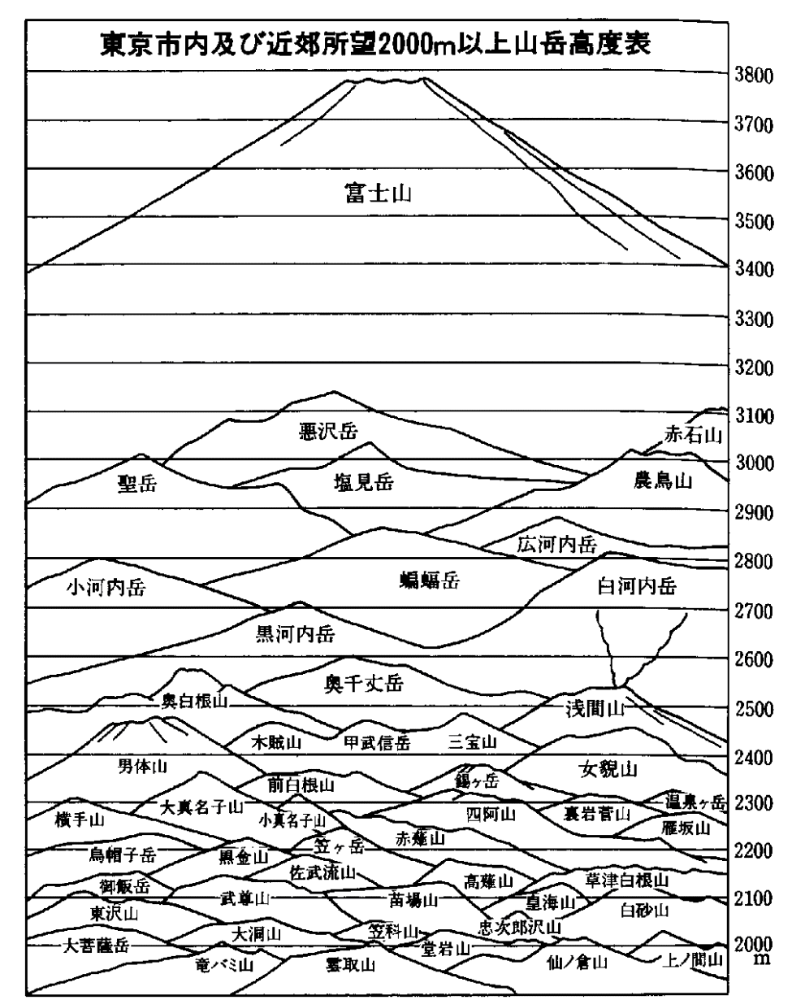

| 望岳都東京 | |
| 木暮 理太郎 | |
| (2015) | |
望岳都東京
木暮理太郎
むかし太田道灌が始めて江戸城を築いた時、城上に間燕の室を置て之
を静勝軒と名付け、東は江戸湾を望み西は富士秩父の連嶺を軒端に眺めた所から、東を泊船亭と曰
い西を含雪斎と曰うたとのことである。静勝軒を題として記述した詩文に、「西嶺当レ
窻雪界レ
天」、又は「西望則逾二
原野一
而雪嶺界レ
天」とある句は、蓋
し実景をよんだもので、雪嶺或は西嶺は富士山を指したものに外なるまい。道灌は風流二千石といわれた程あって、歌も上手によみ、扇谷の老臣として軍旅に忙しい身でありながら、よくこの静勝軒で歌合や連歌の会などを催した。元より泊船亭や含雪斎の名は、「窻含二
西嶺千秋雪一
、門泊二
東呉万里船一
」という詩句から取ったものであろうが、当時の江戸城は今の宮城内に在る元の本丸の地であったということであるから、眺望の広闊なることは言う迄もないことで、富士は更なり遠い赤石山脈の悪沢
岳や荒川岳（塩見岳）の七月上旬に於ける残雪は、恐らく含雪斎の主人公をして、西嶺千秋雪の感を深からしめたことであろうと思う。
我庵は松原つつき海近く富士の高根を軒端にそ見る
という歌は、静勝軒の大展望観の一部を歌ったものに過ぎないとしても、江戸城の創建者が其処
から見られる山に対して可
なりの注意を払ったであろうことが想像されるのである。
道灌が江戸城を築いた頃は、月の入る可
き隈もなしと歌われた通り、武蔵野は一望曠漠たる茅原か又は雑木林で、展望を遮る高い建物や、石炭の煙などは皆無であったから、静勝軒からは居ながらにして、いつも（恐らく）山を望むことが出来たであろう。併
し今の東京となってからは、そうは行かなくなった。殊に彼の煤煙は最も邪魔物であるから、少くとも東京から山を望むには、空気が乾燥して透明である冬季の晴れた日という一般的条件の外に、煤煙を一掃する為に可なり強い風が吹くという条件を伴う必要が生じて来た。其
風も北西の風でないと好適とはいえないのである。若
し是等
の条件が一つでも欠けて居れば、雪嶺天を界する壮観は到底望まれないものと思って誤りはない。
東京から見られる山の南限は天城山であろう。試に市内の高処に登って遠く眼を南方に放つと、南南西に当って遥
の地平線上に、高低参差
たる三、四の峰頭を幽
かに認めるであろう、之が伊豆半島の天城山で、右端の最も高いのが伴三郎
岳である。けれども天城山は勿論、夫
よりも余程近い箱根山群すら、容易に姿を見せないのは、此
方面の山は東京からはいつも逆光線である為に、判然と認め難いことに起因するものである。箱根の右にはずっと近く大山一名雨降山が、鈍い金字形に立ちはだかっている。其右に続く連嶺は丹沢山塊の主部で、最高点蛭
ヶ岳は山塊の殆ど中央に聳えている。この山塊の上に、いつも端麗な姿を高く天空に顕
しているのは、いわずと知れた東海の名山富士である。風の強い日であるとよく東側に旋風が起って、粉のような雪を吹き捲る有様が肉眼で認められる。蛭ヶ岳から西北走する丹沢の主脈は、東北走して焼山に至る支脈に遮ぎられ、大群山一名富士隠の外は殆ど姿を顕さない。
丹沢山塊の右には、道志
山塊の御正体
山、鹿留
山、御座入
山、朝日岳（赤鞍岳）などが続き、朝日山の右の斜線は、河口湖の東北に聳えている三峠
山の左の斜線と、与瀬駅の南方に在る石老
山の上で交叉している。南アルプスの聖
岳と笊
ヶ岳とが、展望の場所によりて、其処へ交互に姿を見せるから面白い。
三峠山の右には、大幡八町峠の北に続く本社ヶ丸が特有の尖頂を擡
げて、三峠との間に御坂
峠の西に在る黒岳を擁し、北に向っては笹子川を隔てて、これも特異の尖頂をそびやかした滝子山と相対している。其前に低く横たわっているのは高尾山、城山、小仏峠、景信
山、陣馬ヶ峰などである。南アルプスの幾つかの山が雪の姿をきらりと垣間見せるのは、展望の場所は何処であろうとも、視野は略
ぼこの滝子本社ヶ丸二山の間に限られている。
●景信山より見たる丹沢山塊と大群山
滝子山から右に続く連嶺は即ち大菩薩山脈である。武甲二州及
相武二州の国界を成している小仏山脈が一段低く其前を走っている。両者とも北に行く程高く、そして前者の最高点大菩薩岳は、後者の最高点三頭
山と殆ど重っている。大菩薩山脈は滝子山から次第に高まって、恐ろしく平な高原状を成した尾根が続き、一旦低下して急にむっくりと崛起したものが黒岳山で、其前に雁
ヶ腹摺
山が大きく蟠
っている。次は二千十四米
の小金沢山を主峰とした一群である。其北には狼平の鞍部があり、真白に雪の積った茅処
の尾根が天狗棚山に続いている。此山から東に延びた尾根には、小菅から萩原に踰
える昔の小菅大菩薩の路が残っている。現在の大菩薩峠は、天狗棚山の北に接する四阿
の形をした熊沢山と其右に在る小隆起との間を通じている。小隆起の右には妙見山が尖り、最後に大菩薩岳が一段と高い。此山脈の右には多摩川上流の大岳と御前
山とが前後に重って、谿谷の空を占領している。其右に連る大山塊はすべて秩父の山山である。
秩父山塊は東京から眺めると、長い連嶺を縦に見る為に、二千米以上に達する三十幾座の峰を有するに拘
らず、僅
に其中の数座を望見し得るに過ぎない。雲取山は此等諸峰の中では最も低い部に属するものであるが、南北に肩を張って武蔵野の縁に聳立しているところから、秩父群山の中心を成している観がある。実際東京から見られる山の中では、富士山を除けば此山が最も高く抜け出している。其左には少し離れて大洞
山一名飛竜山が左に長く尾根を曳いている。其尾根が一度下って前飛竜を隆起させている頂をこえて、円く黒い山が覗いている。これは自分が奥仙丈岳と命名したいと思う山で、国師
岳を西に下りた三繫平
の南に在る。高さは金峰
山図幅に拠
れば二千六百米余、これぞ秩父山脈の最高峰である。白金台からは其右に続く国師岳をも見られる。
雲取山の右には芋ノ木トッケと白岩山とが市女笠
の形をして聳えている。これと雲取山とを結び付けた線の上で、危く綱渡りをしている山が三つある。四谷見附附近では、左と中央との二山が隠れて新しいのが右から出て来る。駿河台、牛天神、凌雲閣等からは、右の山は隠れて中央と左との二山が目に入る。自分は曾て凌雲閣の上から、ふと甲武信
岳の幻影をこの中央の山に見た。それ以来この幻影は絶えず自分を悩ましていたが、雪が晴れて珍しく空気の澄んだ二月十日の朝、復
凌雲閣に上ってとうとう正体を見届けた。正しく是は甲武信岳である。左の山は陸測五万の金峰山図幅に二千四百六十八米と測られたもので、栃本の猟師は木賊
沢ノウラ、梓山の猟師は雲切山と呼んでいる。右の山は言う迄もなく三宝
山である。雁坂
山は甲武信の左下に、破風
山は木賊の右下に、共に蹲
まっている。牛天神や赤城神社や駿河台から見たのも略ぼ同様で、唯
位置が低いだけに雁坂や破風が少し伸び上がるが、其頭は甲武信や木賊にいつも抑えつけられている。
●南より見たる陣馬ヶ峰
白岩山から北には仙元峠に続く主脈や、これから派出した支脈に属する幾多の峰が波頭の如く連って、次第に低下しているはては、鶏冠状の大持山となり、次
で兜を伏せたような武甲山を最後として、夫からは八、九百米の山が高原状を成して北走し、笠山に至り、更に低下して六百米前後の丘陵となり、荒川左岸の丘陵と重り合い、終
に地平線下に没している。この丘陵の上にドッカと腰を据えて、悠然と烟を吐いているのは浅間山である。
（大正九、三『中学生』）
秩父の奥山を一層大きく、一層高く、そして一層深くしたような、あの遠い大井川の奥山が、都に縁のある山の中でも、特に夫
が深いと言い得るようになったのは、自分の知れる限
ではつい近頃の事である。長い間幻であった雪の山は、其
大山脈の王位をこっそりと占めていた悪沢岳であることが判った。然
し夫と同じ山脈に肩を駢
べている幾座の山が、同じように東京の空を覗いていようとは、夢にも想わなかったのである。恐らく彼の山達は、都会に幽閉されながらも鋭敏を誇っていた山岳宗徒の神経も、煤煙や騒音の為に全く鈍くなって仕舞ったのではあるまいかと、其迂闊
さを笑うよりも寧ろ気の毒に思って居たかも知れない。この鈍くなった、よく言えば安心の為に仮睡をしていた神経も、忽ち引き絞られた弦のようにピンと張らなければならなかった、東京から荒川岳（塩見岳）が見えるという一言の為に。
それは天文台の小倉君が最初の発見者である。同君は冬休に天子
山脈の西毛無
山（大方
山）に登られ、南アルプスの壮観に刺激されて、飽
まで緊張した神経で、天文台の上から纔
に開けた西方の木の間に白い雪の山を見付け出した。正月の十一日に梅沢君が来て其話をして、夫は荒川岳であると主張した。自分は大
に慌てざるを得なかった。それから四日目の快晴の日に兼ねて目指していた愛宕山の塔に登って見ると、果せる哉
小仏峠の真上に当って特有なピラミッド形に儼然
と雪の姿を顕
して居るのは、紛うようも無い荒川岳である。右からは白峰
山脈が、大菩薩連嶺の南端に在る滝子山の横腹から、恐ろしく刃渡りの長い大薙刀を上向きに切先鋭く突き出して、あたりの山を近付けまいと威嚇している。樺色を帯びた雪の中に、五、六本の黒ずんだ襞が焼刃の匂
かと物凄い、其坂刃の高まった所は、陸測五万の大河原図幅に二八一二米とある地点（白河内
岳）だ。丁度其辺で荒川岳の右の尾根が薙刀の刃先に懸けられてポツンと途切れている。左に曳いた尾根は二九四〇米の小凸起を擡
げた後、恐らく白峰山脈の二七一七米とある峰（笹山）と、すれすれに紙鳶
の糸のような雪の線を残して、近い小仏峠の城山の真上迄来ると、蝙蝠岳がのそりと顔を出す。其左の翼が高尾山の上で、ちょいと爪を懸けて居るらしい白い点は小河内
岳ではあるまいか。
此処
から見ると悪沢岳は、本社ヶ丸と御坂山脈の黒岳との間に、頂上から左の斜面へかけての一部分をちらと見せている許
りであるが、更に胸をドキ付かせたものは、三峠の毛無山の左の裾が、朝日山（赤鞍岳）の北に在る田野入
山の裾と交叉した所に、軽く置かれた一抹の雪らしい者であった。聖岳ではないかと気が付いたが、其日は少し雲があったので判然しなかった。二日の後偶然此
塔上で中村君に出遇ったので、夫は聖に相違ないと決定した。五日を経て再び中村君と途中で一所になって、共に塔へ登った時、不思議にも小倉君が来て、此山が矢張
り天文台からも見えることを話された。此塔からは残念ながら赤石岳を望むことは出来ないが、凌雲閣からは愛宕の塔から悪沢岳を見た位置、即ち本社ヶ丸と黒岳との間に、少し前者に寄り懸り気味にして、頂上の南のはずれから左の斜面へかけての少部分を見せている。最
う少し南寄りの場所、例えばニコライの塔か又は本郷元町辺の高い処ならば、頂上が見られるに相違ないと信ずる。此処から眺めた悪沢岳は、実に素晴らしいもので、見て居る中
に大井川奥の強い力ある山の呼吸が、石炭の煙や汽笛の響に濁り切った都会の空気に漲溢
して、懐しい山肌の匂が体に滲み込んで来るように思われる。蝙蝠岳が陣場ヶ峰と滝子山との間におずおず顔を出している。繰り返して言うが、あの遠い大井川の奥山は、都に縁の深い山である。
●南より見たる連行峰
高輪台の南端からは農鳥 岳が見えてる筈であるが、惜しいことには附近に挑向きの観望台がない。目黒の行人坂の上から南に折れた台地（高さ三三米）の西端からは、附近の松の木や目黒台の木が邪魔をするが、滝子山の横から頂上を辞した許りの農鳥岳の左の斜面が、白熱した溶岩のようにはみ出して、南へ南へと流れているのが見える。それを堰き止めようとした広河内岳は、頭から大波を被って前へのめりながら、頼りなげに悶躁 いている。白峰山脈は真白だ。然し荒川岳は一層白い。蝙蝠岳が此処でも南のはずれに円 い頭を見せる。奥仙丈の右には国師が可 なり尖って突立つ。金峰の頂上らしいものが奥仙丈の左の斜面にちらと雪の寸線を見せたように想ったが、或は其辺に漂うていた雲の一部分であったかも知れない。尚 お飛竜の右に八ヶ岳の赤岳、毛無の左に赤石岳が若 しや現れやしないかと注意したが、其処には絶えず一団の白い雲が湧いていたので、有無の断言を憚 る次第である。青山練兵場も荒川、蝙蝠、国師、三宝等を望むには好い場所だ。自分は此稿を書きながらも、何百年かの前に石垣も煉瓦塀もない平野の中で、絶えず此等山岳の姿を目に浮べて、悠々と鹿や兎を追い廻して居た昔の人を羨しくさえ思った。是等 の山々を望み得る市内の展望台としては、浅草の凌雲閣と芝の愛宕の塔だけであろう。其他駿河台のニコライの塔や高台の上の火の見櫓というようなものに上れば、よく見えるには相違なかろうが、普通誰にも自由に展望し得る所は、前記の二ヶ所のみである。尤も日光の男体山や奥白根などは、市内の街道からもちょいちょい見られる。例えば大学の赤門前からは冬の間よく北正面に男体山が見えて冷たい風が其方から吹きつけて来る。いつか日本橋の上から秩父の三宝山を見て驚いた事があった。然し全体を大観するには是非とも凌雲閣に登らなければならない。愛宕の塔ではまだ少し低いので過半は前面の木立に遮ぎられて了う。凌雲閣ならば何一つ遮ぎるものは無いが、惜しい事には浅間山から赤城山の見ゆる方向に赤羽、王子等の工業地があって、林立せる烟突から盛 に吐き出す黒烟は、遠慮なくこれらの山々を呑吐して、容易に全容を窺うことが出来ぬ。そこで自分は烟などに邪魔をされないで、ゆっくり眺める事の出来る場所はないものかと、市外近郊の地を探し廻って赤羽台に立った時、其眺望の広大なのにおどろいた。大菩薩の連嶺から右の方秩父、上信界、上越界、日光、那須、筑波の山々まで、空気の清澄なる日には手に取るが如く見得る。それで其中の浅間山から男体山に至るまでの間に見ゆる山々に就て書いて見ることにした。
（大正三、六『山岳』）
曾つてこんなことを想像して見た。
「二月より四月。此頃晴れたる日には四方の山能く見ゆ、富士筑波はいふも更なり、秩父、浅間、赤城、日光の山々まで鮮に見え渡れり。場処は駿河台、牛天神、愛宕山、道灌山などよし」などいうような二、三行の文字が、若
し『東都歳事記』とか又
は『江戸遊覧暦』とかいうような本の何処かの欄に発見されたとしたならば、吾等山岳宗徒は如何に驚喜の目を瞠
って、之
を再読三読したであろうかと。
実際昔に在りても数多い人の中には、山を見て楽しんでいた者が尠
くなかったであろう、唯
だ惜むらくは詳しい記事が吾等に残されていないのである。然
し其
種の記事が絶無という訳ではない、内閣文庫所蔵の村尾正靖の『嘉陵記行』（近頃此書は「江戸叢書」第一巻の中に収められて、江戸叢書刊行会から出版された）を見ると、必ず各所から眺望される山名が記載されている許
りでなく、わざわざ桶川まで浅間山を見に出懸けたことさえ記してある（別項「嘉陵記行」参照）。自分は之を読んでこの隔世の同好者を懐しむの情に堪えなかった。斯様
な熱心家は別としても、江戸から見得る山の事を書いた本は決して乏しくはない。『江戸名所図会』は、道灌山から日光の山が見え、柳島の妙見から秩父山が見えるように画いてある。『墨水遊覧誌』は眺望の遠山を挙げて「筑波山、二荒山、赤城山、榛名山、秩父山、高尾山、雨降山、足高山、箱根山、富士山、以上十山なり」としてある。文化十二年版の『武蔵野話』は巻首に「武蔵野は十郡に跨りて、西は秩父根、東は海、北は河肥（川越）、南は向が岡都築ヶ原にいたるとなん、東北に筑波山、北二荒山、赤城山、吾妻山、西北に浅間山、西南に多摩山、不二山、箱根、大山を眺め、東に山を見ざるのみにて、曠々たる高原の地なり」と記してある。更に遡って江戸開府より十年とは後
れていない三浦浄心の『慶長見聞集』には、次のような記事がある。
吉祥寺門前に草木仏事をさえづる事
見しは今、江戸吉祥寺の境地、在家離れたる古跡、此住持洞谷禅師と申て、法令世に超へ、釈迦達磨の変化かと沙汰せらる。或日愚老此寺へ参詣せしに、人倫たえたる閑居、物さびたる異地、山高うして上求菩提をあらはし、谷ふかきよそほひは下地衆生を表せり。四神相応の地をしめし、後に浅間山日光山そびえ、東に筑波山、西に富士山箱根山軒端につらなり、和光の影に曇りなく仏法を守護し給ひ、月真如の光をかゝげ、前には生死の海まんまんとして波煩悩のあかをすゝげば、無始の罪障も消滅すると覚えたり。（下略）
都人待乳山一見の事付
宗斎事
（上略）扨又宗斎江戸にて、もろ人の山の詠をしらざるや、見渡せる山々には、安房にもとな山、上総に鬼涙山、下総に海上山、常陸に筑波山、下野に日光山、越後に三国山、信濃に浅間山、上野に赤城山、甲斐に白根岳、相模に箱根山、伊豆に御山、駿河に富士山、此十二ヶ国の名山を武蔵二十一郡のめぐりにたて、軒ばに立て「武蔵野もさすがはてなき日数にや富士のねならぬ山も見ゆらん」と宗久法師はよみ給ひぬ。云々。
吉祥寺は其頃今の本郷元町の高台に在ったのであるから、眺望の好かったことは勿論であろうが、浅間山や日光山が見られるなどは噓と思う人があるかも知れぬ、然
し同じ本に「昔は江戸近辺神田の原より板橋まで見渡、竹木は一本もなく皆野らなり」とあるから、眺望の広闊なること推して知るべしである。尚
閑暇に任せて渉猟したならば、或は多くの材料を蒐めることが出来るかも知れないが、夫
は他日に譲ることとし、茲
には東京から眺めた浅間山と男体山との間に包括される約四十度の視野を舞台として、其処
に登場する山の幾つかに就て少し許り説明を加えて見たいと思う。
東京から見得る山の中で最も遠いのは、今の所では越後の苗場山であろう。『北越雪譜』の著者鈴木牧之
君は、「苗場山に遊ぶの記」を書いて、其中に「爰に眼を拭ひて扶桑第一の富士を視出だせり、其様雪の一握を置くが如し、人々手を拍ち、奇なりと呼び妙なりと称讃す」というているが、其時若し江戸の友人であった曲亭主人から、「苗場山は江戸の近郊赤羽台といふ所より望むに、其様俎の片足無きが如く、そゞろに奇と呼び妙といはまくのみ」というような通信でもしたならば、牧之君は夫こそ手を拍って、どんなにか喜んだ事であろうと思う。苗場山に次
で遠いのは信州の岩菅山、野州の那須山という順で、大井川奥の聖岳は二十番以下である。夫にしても苗場や岩菅などは、二千米を超ゆること僅
に百か二百米に過ぎないに拘
らず、関東平原の一隅に位する首都東京の市中から、啻
に頂上の一部ばかりでなく、殆んど中腹まで望むことが出来るのは、低い前山との距離が近い割合に、前山と東京との距離が遠い所為
であろう。吾等に取っては勿怪
の幸
である。
東京市中又は近郊から山を望む好季節は、二月から四月稀に五月上旬迄である。其他の時季では如何に好晴の日でも、遠い山を識別することは困難である。而
も好く晴れて少くとも北西の風速八、九米を超えていなければ、地平線上に鬱積せる煤烟を一掃することが不可能であるから、従って遠い雪の山は望めない事になる。二月は強い風の吹く日は多いが、其頃は未だ山という山に雪が降るので、雲が懸り易いから、容易に全容を曝露するに至らぬ。桜の咲く三月下旬から四月にかけて好く晴れた日に強い北西の風が都大路の塵を吹き立てて、浮かれ心地の花見客が顔をしかめるような時こそ、吾等には断じて見逃すことの出来ない好機である。殊に此頃
は前山の雪が消えて遠い山だけ白く残るから、紛糾した尾根が明瞭に識別され、重り合った糸のように細い雪線すら手繰り出すに困難でなく、正体を見届けるのに尤も都合が好い。自分がセバト川の上流に蟠
るセバト連嶺から、苗場山を識別し得たのは丁度此頃の風の強い晴れた日であった。
秩父の群峰は東京から西望すると、鉄兜を伏せたような形をした武甲山を最後として、最早
千米以上の山を崛起しない。夫からは八、九百米の山が一段低く連なって、高原状を呈している。此連嶺の北端には処女の乳房によく似た笠山が聳えている。舞台は之から始まるのである。
明治二十九年の六、七月頃であったと記憶する。雑誌『太陽』の第二巻第十二号の地理欄に、当時学士であった山崎博士の「飛鳥山頭の眺望」と題する文が載せてあって、中に田端から遠望した「赤城山から日光の赤薙
山まで」の略図と、赤羽台続きの袋村の崖頭から見た「浅間山から赤城山まで」の略図とが挿入してある。当時の抜萃帖を探って其中の一節、袋村の崖頭から望んだ説明の文を左に抄録する。
榛名赤城両山の間に当り、更に遠く亦円錐形の孤山を認む、是れ子持山にして亦消火山なり。子持赤城の間なる谷は即ち関東第一の大河坂東太郎利根川の注ぐ所にして、東京より北越新潟に達する国道此間を通ず。其遥かに見ゆる山嶺は沼田以北の諸山にして、彼の国道は此を踰え、所謂清水越なる坂路を造る。此山嶺は子持山の後より左（西）に連り、榛名山の遥か後方を過ぎ、其左に現る、信越上三国の境なる三国峠は其恰も榛名に隠るる辺にあり、此一帯の山脈は実に本邦の脊梁を構造せる一大山脈の一部にして、太平洋と日本海の間に立てる分水嶺をなす。陽春四月榛名、赤城は既に青黛色濃かなるも、此等の山岳は猶皚々として白帽を戴くを見る。（中略）榛名の左を見れば峨々たる奇峰あり、上毛の奇勝妙義山即ち是なり。妙義の西に当り浅間山あり。（中略）浅間妙義の前面に当り綿亙せる山岳は、甘楽秩父の地方に蟠るものなり、其峰頭稍高きものを御荷鉾山と荒船山となす。（下略）
自分は多大の興味を以
て此記文を読んだ一人である。そして東上州に生れて日夕此等の山を望見していたので、多少推定が誤って居りはせぬかと疑った点もあったが、精確な地図とても無く、亦
少数の外は山というものに興味を持った人も無かった時代に、これだけの文を発表して世人の注意を惹き起されたのは、流石
に山の研究に熱心な博士だけあると首肯される。然し恐らくは其当時此文に感興を持った人は、矢張
り極めて少数であったに相違あるまい。自分が『山岳』十年一号に臆面もなく彼の拙いスケッチを載せるに至ったことも、半
は博士の此文に刺戟された為であるというてよい。
笠山の北には口元秩父の山々が、更に一段低くなって遠く北方に走っている。此連脈の殆んど中央に当って上信国境の浅間山が、裾さばきゆたかに玲瓏玉の如き姿を顕
して、西上州の野に君臨している。南を取り巻く雪堤の如き隆起は、剣ヶ峰から牙山に連なる外壁の山々である。浅間山の三角点は丁度頂上の左の肩の突端に位している、即ち二千四百九十三米の地点で、絶頂より五十米ほど低い。五月頃になると雪がむら消えして、玉の膚にも奇怪な竪縞が幾つか現れる。東南面が殊に甚しく、中にも弥陀ヶ城岩のあたりに現れるものは、濃藍色の帯のように幅が広い。浅間と笠山との間に低く頭を擡
げているのは、地質の上から名高くなった御荷鉾
山の連嶺である。凌雲閣から望むと西御荷鉾は笠山に隠れて、東御荷鉾の頂上から右の斜面へかけて見えるだけだ。愛宕の塔からは浅間山しか見えない。山崎博士が荒船山と推定されたのは或は雨降山の事であったかも知れぬ。
アソという語は馬来
語の烟を意味する言葉で、阿蘇浅間は皆同一語原から来たものであるというような記事を何かで読んだことがあると覚えている。果してそうであるとすれば、富士山の浅間神社も其本体は火山を崇
めたものなのであったろう。そしてフジはアイヌ語の火を意味する語であるそうだから、アイヌ語の富士は山の名となり、馬来語の浅間は神社の名となって、センゲンと音読され、茲に富士浅間大明神なる熟字が出来上ったものであろう。上信界の浅間山なども昔の人が火を崇めた習慣からでもあろうか、随分古くから可
なり多くの登山者があったものらしい、『当代記』慶長三年四月八日の条に次のような記事がある。
一、浅間山へ参詣衆八百人程焼死云々。
昨日大小ノ違ニテ、不縁日ノ由山巓ニテ呼ト云ヘトモ、只人間ノ所謂也ト心得不用之、参詣ノ処如此。
当時富士山が噴火したという記録はないようであるが、之に反して浅間山は二、三年来盛
に活動していたらしい証拠がある。『天寛日記』にも
慶長二年三月朔日浅間山噴火
慶長四年二月廿日浅間山鳴動
などの記事があり、其他『当代記』、『慶長年録』等にも同様の記事が見えているから、浅間山へ参詣衆とあるのは富士の浅間神社へ参詣したのではなく、上信界の浅間山へ登山したものと見て差支ないようである。之等から推しても我国の登山の歴史は可なり古くから始まっていることが知られる。
浅間の北には長大な四阿
山が大魚の背を浮べたように横たわる。碓氷
峠から北に続く連脈は、一之字山、網張山、鼻曲
山、八栗山の剣ヶ峰、角落山となって四阿山脈の下に紛糾している。殊に三段鼻の形をした鼻曲山は、雪の白い四阿山の直下に藍色の影となってへばり付いているので、識別するのに困難であるが、白い雪の山が隠れると、急に鼻を尖らしてのさばり出す。山崎博士は之を上毛の奇勝妙義山と推定されているが、東から眺めた妙義の三山は形に於て大なる相違がある許りでなく、妙義も荒船も御荷鉾の連嶺に隠れて東京からは望まれない。
鼻曲山の直ぐ右に続く二峰は、霧積温泉の北に聳ゆるもので、南麓に懸る二、三の小瀑布が温泉附近に景致を添えている。角落山と剣ヶ峰との間に見ゆる一峰は、浅間隠の南方に在る千五百二十米の地点であろうかと思う。角落山は頗る急峻な山で、頂上には角落権現が祭ってある、所謂
天狗様だ。土人は之を尊崇して登拝者は木刀を奉納することになっている。
浅間隠という名は、大群山に富士隠の名がある如く、榛名山の西北麓に在る大戸、厚田、郷原などの村民が便宜上呼び慣していたものが、其儘
山名となったのである。此山は東南の方向に狭い頂上を展開しているので、東京からは真竪に望む為に鑿
のように鋭く尖って見えるが、少し東北から眺めると可なり秀麗な富士形を呈示する。右の肩の三峰は北に続く主脈中の千六百米前後の隆起である。其右には更に千四百七十三米七の頂の平な峰が続く。此脈の最北端に位する菅峰（大洞山とも称す、高さ千四百七十三米四）は、笹塒
山の右に尖頂を現しているのがそれであろうと思うが、或は此山は見えないかも知れない。
浅間隠から東に走る尾根は、角落山の東の尾根に遮られて、前記の千四百七十三米七の峰の右に千四百十米の峰が初めて姿を顕している。其右は即ち笹塒山である。四阿山から北に走る上信国境の山脈は、一度浅間隠の後に沈下するが、其右には三つ許の峰頭を白く見せて、笹塒山の上に一座の雄峰を崛起する。此峰はいつでも影の様に藍色を呈している。或は黒湯山ではないかと思ったが、容易に白い斜面を見せないのは、山を縦観する為であろうから、恐らく御飯
岳に相違あるまいと思われる。此山は極めて稀にしか姿を顕さない。
白根火山塊は皺襞の甚しく錯綜した、夫でいて何処かゆったりした処のある気持の好い山だ、裾野がよく見渡される所為であるかも知れぬ。山塊の中央に当って一と所裾野の色が雪の上に大きく紫インキでも潑した様に美しく染まっている、これはモノヌギバの池の下手に在る針葉樹の大森林であろう。北端の最高点は横手山、其左下の峰は二千二百米の池ノ塔、此二山の間を渋峠の旧道が通じている。峠から横手山の頂上まで四十分で行かれる。白根山へは葭
ヶ平の一軒茶屋の手前から左に細径
を辿って、最高点の地蔵岳でも下駄履きで草津から楽に日帰りが出来る。山崎博士の略図には浅間隠も白根山塊も描かれてあるが、共に山名は記載してない。
白根山塊の東に横たわる群巒
は、上毛三山の一に数えられている榛名火山である。中央火口丘の榛名富士は榛名湖の東に聳立して、其前面（南）は平な高原をなしている。相馬
山は一に黒髪山とも唱えて、頂上には御宮が在る。富士と其北に位する烏帽子山との間からは、上信界の大高山（二千七十九米）がちらと覗いているが、更に高い岩菅山が後から重っているので、見分
るのが困難である。裏岩菅山は赤羽台の東端からは、相馬山の尖頂に巓
を遮られるが、五、六町西の方へ行けば、比較的平な頂上が相馬の西に現れる。凌雲閣ならば殆んど烏帽子山の真上に望むようになる。相馬山の右の斜面に寸白を露わした岩菅の山脈は、二ツ岳の右に長大な烏帽子岳を起して、其最高点は八間山の真上に重っている。
八間山の西には野反池が在る、花敷温泉から日帰りで楽に行ける。八間山から右に見える尾根は、鍋を伏せた様な形をした千九百四十米の一峰を起して堂岩山に続いている。其右の肩の上に尖頂を擡げているのは、其山の直ぐ北に聳えている二千百二十米の八十三
山である。此附近から右の方苗場山に至る迄は、木戸山の連脈や其他幾多の前山が縦横に起伏して、縺
れた糸のように入り乱れているので、どの尾根がどの山に続くものか、遠方からは到底識別することが出来ない。
堂岩山の一峰とも見る可き二千二十米の地点から尾根は一たび低下し、上信越三国の境に至って、一座の雄大な山を聳起している、即ち白砂山である。古い絵図には稲包
山が上信越三国の界となっている。これは其山の北に三国峠の名がある為と、実地を蹈査しなかった為との誤りであろう。白砂山の右下に重っている一峰は木戸山である。白砂山と上
ノ間
山との間で尾根が二つ許り波を打っている、其一で上ノ間山の左に在る峰の上には、濃い藍色の影が鮮
に望まれるが、之は二千百九十二米の佐武流
山である。佐武流山から東南に延びた尾根は、清津川の上流に近く二千八十米の岩峰を崛起している、上ノ間山の右の肩から覗いている峰らしいものが夫であろうかと思うが、これは頗る怪しいものであるから疑を存して置くことにする。
上ノ間山から尾根は北方に延びて二千八十米の忠次郎山となり、更に二千百二十米の長大な東沢山を起して大黒山で終っている。其前には千八百米を超えているセバト連嶺が南北に足を伸ばして、南は木戸山に北は遠く筍山に連なっている。此連脈の山々は孰
れも記録を有していないという点に於て処女の山である。自分も実際に蹈査した訳ではなく、曾て赤城山や榛名山に登った時、遠く展望したに過ぎない、其上東京からは形も大分異なって見えるから、右の断定が皆正しいとは思わぬ、然し大体に於て甚しき誤りはないと信じている。
此連脈は略
ぼ西南より東北の方向に走っているので、午前と午後では山貌に著しい変化を起すのが特色である。午前には日を正面に受ける為に、横に派出された小尾根も谷も、唯だ一様に穏かな雪の斜面を見せて、凸凹などは少しもなく極めて平滑なようであるが、日が西に傾くに連れて、横尾根の日蔭になった半面と谷とが、濃藍色の太い竪縞を山の肌に織り出し、而も明暗の境界線がレムブラントのエッチングのように鋭い。何の奇もない穏かな山であると思っていたのが、忽ち骨だらけな※々
［＃「石＋兀」、U+77F9、37-8］
した山と変って行く。其変化の様を静
に観ていると堪らなく面白い。
セバト連嶺は大黒山の下に千八百二十米を超えている長い頂上を展開した後、一段低くなり、更に二つ許りの峰を小野子山の上に擡げているが、其平な頂上が将
に低下しようとする所から、梢
円味を帯びて殆ど直線に近い空線を描いた一座の山が、前記の二峰の上にのり出している。この特異の相貌を有する山は、曾て赤城山から眺めて見覚
のある苗場山に相違あるまいと思ったのであるが、未だどの山にも雪の多い二、三月の頃には、恰
もセバト連嶺と一脈の峰頂であるが如くに連続して、到底識別することが不可能であった為に、奇異の感に打たれていたのであったが、更衣の時季も近い五月中旬に前山の雪が残りなく消えて、此山独り白妙の衣に包まれているのを見た時、始めて苗場であることが慥
められた。苗場の右下で小野子山と子持山との間に重り合っている山々は、尤も低い前山が尻高山であることだけは判然したが、其他の筍山、神楽ヶ峰等は、猶精探した上でなければ夫と推定することが不可能である程、幾重にも重り合っていることを発見した。
子持山の右には雄渾な仙ノ倉山が聳えている。此山の西方の一峰と子持山との間にある小突起は、四万図幅の大源太山（千七百六十四米、渋沢山）とあるものに当っている。従って三国峠は子持山の後に隠れる訳で、山崎博士が榛名に隠れる辺にあると書かれたのは、子持の誤りであろう。上越国境の山脈は仙ノ倉山の東に万太郎山を崛起して赤城山の後に隠れたまま、終
に再び其姿を現さない。
黒檜
山、地蔵岳、荒山、鈴ヶ岳、鍋割山を赤城五山と称している。其中
尤も鋭い鈴ヶ岳は、荒山の左の肩に遮ぎられて東京からは望まれない。大沼
は中央火口丘である地蔵岳の北麓に、小沼
は其東南麓で長七郎山の北に在る。赤城の氷は大沼から切り出すもので、二十年も前の冬の大洞はなかなか賑かであった。小沼の水は南に流れて滝沢で十二、三丈の不動瀑を懸けている。国定忠次の隠れ場であった紫藤洞は此附近をさしていうたものだそうだ。黒檜山は梅鉢草
、虫取菫
、雪割草
の産地で、中にも梅鉢草の咲き盛りには頂上の東の斜面は実に美しい。
赤城山の東には、根張りの大きい武尊
山が幾
んど全容を露している、信州の穂高山と同じ神が祭ってある所から察すると、何か其間に因縁があるらしい。其東に当って袈裟丸
山の左の裾の上に、夫こそ雪の一握を載せたような白い尖頂は、正しく笠科
山であることが後に判然した。赤羽台を五、六町西の方に行くと、秀麗なる笠状の峰頂が全部望まれる。
袈裟丸山から温泉
岳に至る上野州国境山脈の山々は、僅に奥白根と庚申
山とを除く外は、自分には尽
く未知の山である。其上幾多の前山が錯峙しているので、五度や六度見た位で尾根の続き工合を識別するのはなかなか困難である。
袈裟丸山は地方では沢入
の袈裟丸と呼ばれている、何でも其村から登れるということであるが、判然したことは知らない。袈裟丸の右に見ゆる稍や高い一峰は、其北に連なる利根山の最高点千九百五十八米の地点である。其右の一峰から右に引いた尾根は即ち庚申川の南を限るもので、原村から一条の登路が其上を通じている。主脈は此尾根の後に姿を見せて、皇海
山の前に庚申山へ続く鋸山を崛起しているのであるが、之を識別することが不可能である場合が多い。
庚申山の右には笠ヶ岳、続いて錫
ヶ岳の秀麗な姿が宿堂坊
山かと想われる者の左上に顕われる、積雪の有様から推すと、笠も錫も大分木が繁っているらしい。錫ヶ岳へは中禅寺湖西岸の柳沢川に沿うて遡ったならば、容易に登れそうに想えるが、実査した訳でないから何とも保証することは出来ない。
奥白根の円錐頂は、十月初旬から五月下旬まで真白な雪の綿帽子を被って、群山の上に屹立しているので尤も目を惹き易いが、雲に掩われている時の方が多い。此山は西から北に望まれる山の中で最高位を占め、奥秩父の喬岳金峰奥仙丈の諸山と雁行して遥
に雄を争うている。上州では之を荒山と唱え、頂上に荒山権現が祭ってある、蓋
し山体を崇めたものであろう。『見聞雑録』に明治五年の噴火の記事が載っているから左に抜萃する。
利根郡荒山噴火之儀ニ付群馬県ヨリ大蔵省ヘ御届之写
当県下上野国利根郡東小川村地内荒山西面山腹ヨリ硫黄気燃立候趣、別紙之通図面並
焼場石共相添、届出候ニ付、直ニ官員差遣シ、見分為致候処、右届之通相違無之ニ付、此段御届仕候也。
壬申（明治五年）六月廿三日
別紙大意
右荒山ノ儀ハ、絶頂ニ荒山ノ神社鎮座アリテ、毎年六月十八日村役人一同登山スルノ例有、右荒山原来硫黄気多ク、東西南麓ニ温泉アリテ、山六七分以上ハ草木生セサル程ノ焼山ナリト雖モ、硫黄気燃立、煙リ吹出ス等ノ事ハ古キ伝聞モアラサルヲ、当四月頃俄ニ山腹ヨリ烟リ相立初メシカ、其後時トシテ鳴動シ、追々燃、吹出候箇所多分ニ及ヒ、曾テ聞天明年中浅間山焼燃セシ災難ヲ追懐ノ思ヒヲナシ、近傍為ニ恐怖シ、村役人共申合、登山トシテ見分ナスニ、中央ノ拝所ト唱ヘル場所ヨリ凡三四十間上ノ方ニテ竪二百間余、横百五十間余ノ場所、少々煙リ吹出シタルニゾ、万一往時浅間山ノ如キ変災ヲ蒙リ候事モ哉ト、一同心痛ナシ、右図面ヲ以其県庁ヘ届ケシト也。
白根山塊の前面には、中禅寺湖の南に連亙
せる半月山、社
山、黒檜岳、太平山等を含む最高二千米に近い峰巒が臥牛の如く横たわっている、左の端の最も高い地点が太平山である。半月山から左に曳いた尾根がちょいと前山の頂に隠れて、再び高まった所が千八百二十米の社山である。足尾から中禅寺湖畔に踰
える阿世潟
峠は、此二山の間の最低所を通っている。
奥白根の右には前白根から外山に続く連脈が長く延びて、上野州の国境山脈を遮蔽している。其右には温泉岳の尖頂が、主脈と直角に交叉した尾根の上に聳えているのが見える。其右の二山は刈込湖の西に聳ゆる二千二百三十二米の峰と、其西の二千二百八十米の圏を有する峰とに相違あるまい、従って更に其右に見ゆる一峰を高薙
山と断定したのであるが、自分は此山の形に就ては何等の知識も有していないから、多少怪しいものだとは思っている。然し先ず誤りはなかろうと思うのである。
男体山は群山を離れて独立高聳しているので、奥白根より百米近くも低いに拘わらず、見た目には余程高く感ぜられるのみならず、形が美しいのでどうしても此方面に於ける王者の趣きを備えている。前面の低い山は細尾峠の東南に続く夕日岳、地蔵岳などの連脈である。
自分は東京市の西から北にかけて見渡すことの出来る山々を、関東の両大関とも云う可 き浅間山と男体山との間に限って了 ったが、男体の東には大真名子 、小真名子、女貌 、赤薙などの日光山彙が続き、稍や離れて高原山、其右に大佐飛 山、更に最も右に離れて北微東に那須火山塊が見られるのである。此方面の山は赤羽台よりも寧ろ凌雲閣の方が能 く望まれるようである。此等は他日或は補足して東京から見ゆる山岳の展望観を完 うしたいと思っている。若し読者諸君の中に同好の人があって、之を補って下されば非常に幸である。
（大正五、一二『山岳』）
森林に彷徨
い幽壑
に逍遥するの興趣は、都会の地に於て覓
むることは到底不可能である。それ所ではない、わるくすると今に青い物は野菜の外に見られなくなるかも知れぬ。人口の増加と工業の発達とは、一歩の地を剰さず寸苗の青を残さざらんとしている。殊に彼の煤煙という生物に取りて恐る可
き大敵は、纔
に余喘を保っている都会の樹木に先ず其
毒害を及ぼして、之
を枯し尽さざれば止まざるの勢がある。若
し油断して適当な施設を加うることを怠るならば、遠からずして鳥も鳴かず虫も歌わず、殺風景にも目に視
るものは煤煙、耳に聞くものは騒音の時代と化し去るの日が来るであろう。然
れども人は決して自然と離れて生活し得るものではない、或は自然に逆ろうて決して生活し得るものではない、自然を嘆美するは即ち自己の生命を嘆美する所以
であるからだ。富める者が其邸宅に広大なる庭園を営み、貧しき者が縁日の草花に九尺の陋屋
を飾るのも、自然を楽しみ自己の生命を楽しまんとする所以であって、吾等が万難を排して山に登り谷を探るのも亦
この心が更に強烈の度を増して発現したものに外ならない。天外に湛えたる積翠、雲表に閃く白雪の匂
を、煤煙と騒音との巷にあって楽しむことを知るものは、何たる幸であろう。
東京市内から望見し得る山岳の目録は、『山岳』八年二号、九年一号及び十年一号に挿入せるスケッチに拠
りて、日光火山群の一部、高原幷
に那須火山塊の外は略
ぼ尽されているが、今其中からこれまで（大正六年）に知られている二千米以上の高山を選びて列挙すれば、凡そ左の如くである。
山名 標高 位置 眺望の場所
竜バミ山 （二〇一二米
） 秩父山塊 市内北部の高台。
小金沢山 （二〇一四） 大菩薩連嶺 市内各所の高台。深川八幡の富士。
雲取山 （二〇一八） 秩父山塊 同。日本橋々上。
仙ノ倉山 （二〇二六） 上越界 凌雲閣。田端。赤羽台。
神楽ヶ峰 （二〇三〇） 越後魚沼郡 同。
上ノ間山 （二〇三三） 上越界 凌雲閣。赤羽台。
堂岩山 （二〇三四） 上越界 凌雲閣。赤羽台。
和名倉山［＃「和名倉山」の左に「（地図白石山）」の注記］
（二〇三六） 秩父山塊 市内北部の高台。
大菩薩岳 （二〇五七） 大菩薩連嶺 市内各所の高台。深川八幡の富士。
笠科山［＃「笠科山」の左に「（地図笠ヶ岳）」の注記］
（二〇五八） 上野利根郡 愛宕塔。赤羽台。
大黒山 （二〇六〇） 越後南魚沼郡 凌雲閣。田端。赤羽台。
大洞山［＃「大洞山」の左に「（飛竜山）」の注記］
（二〇六九） 秩父山塊 市内各所の高台。深川八幡の富士。
大高山 （二〇七九） 上信界 凌雲閣。赤羽台。
忠次郎沢の頭 （二〇八〇） 上越界 同。
八十三山 （二一二〇） 信濃下高井郡 同。
東沢ノ頭 （二一二〇） 上越界 凌雲閣。田端。赤羽台。
白砂山 （二一四〇） 上信越界 凌雲閣。愛宕塔。赤羽台。
皇海山 （二一四三） （上野州界最高点上野利根郡） 凌雲閣。愛宕塔。田端。赤羽台。
苗場山 （二一四五） 信越界 凌雲閣。田端。赤羽台。
武尊山 （二一五八） 上野利根郡 凌雲閣。愛宕塔。田端。赤羽台。
御飯岳 （二一六〇） 上信界 凌雲閣。赤羽台。
草津白根山 （二一七六） 上野吾妻郡 凌雲閣。田端。赤羽台。
高薙山 （二一八〇） 下野塩谷郡 凌雲閣。田端。赤羽台。
外山 （二一九〇） 下野上都賀郡 同。
佐武流山 （二一九二） 信越界 凌雲閣。赤羽台。
烏帽子岳 （二二三〇） 信濃下高井郡 凌雲閣。愛宕塔。赤羽台。
黒金山 （二二三二） 甲斐山梨郡 市内北部の高台。
山名不詳 （二二三二） 日光湯元の北方 凌雲閣。田端。赤羽台。
笠ヶ岳 （二二四六） 上野利根郡 同。愛宕塔。
赤薙山 （二二七二） 日光火山群 同。
山名不詳 （二二八〇） 日光温泉岳北方 同。
雁坂山 （二二八九） 秩父山塊 凌雲閣。駿河台。牛天神。本郷元町台。
岩菅山 （二二九五） 信濃上高井郡 凌雲閣。赤羽台。
横手山 （二三〇五） 上信界 凌雲閣。愛宕塔。赤羽台。
破風山 （二三一七） 秩父山塊 凌雲閣。駿河台。牛天神。本郷元町台。
小真名子山 （二三二二） 日光火山群 凌雲閣。田端。赤羽台。
裏岩菅山 （二三二九） 信濃下高井郡 凌雲閣。愛宕塔。赤羽台。
温泉岳 （二三三三） 日光湯元西北 凌雲閣。田端。赤羽台。
四阿山 （二三四〇） 上信界 凌雲閣。赤羽台。
大真名子山 （二三七五） 日光火山群 凌雲閣。愛宕塔。田端。赤羽台。
前白根山 （二三七七） 同 同。
錫ヶ岳 （二三八八） 上野州界 同。
女貌山 （二四六三） 日光火山群 同。
木賊山 （二四六八） 秩父山塊 凌雲閣。駿河台。牛天神。本郷元町台。
甲武信岳 （二四七五？）秩父山塊 凌雲閣。駿河台。牛天神。本郷元町台。
三宝山 （二四八三） 同 日本橋々上。愛宕塔。青山練兵場。
男体山 （二四八四） 日光火山群 大学赤門前。二合半坂。田端。赤羽台。
浅間山 （二五四二） 上信界 凌雲閣。愛宕塔。赤羽台。
大唐松山 （二五五五） 甲斐南巨摩郡 池上附近台地。
日光白根山 （二五七八） 上野州界 凌雲閣。愛宕塔。田端。赤羽台。
国師岳 （二五九一） 甲信界 愛宕塔。青山練兵場。行人坂。高輪御殿山。
奥千丈岳 （二六〇〇） 甲斐山梨郡 同。
黒河内岳 （二七一八） 白峰山脈 愛宕塔。高輪御殿山。
小河内岳 （二八〇一） 赤石山脈 愛宕塔。
白河内岳 （二八一二） 白峰山脈 行人坂。高輪御殿山。愛宕塔。
蝙蝠岳 （二八六四） 赤石山脈 愛宕塔。凌雲閣。青山練兵場。高輪御殿山。
広河内岳 （二八九一） 白峰山脈 高輪御殿山。行人坂。
聖岳 （三〇一一） 赤石山脈 愛宕塔。
農鳥岳 （三〇二六） 白峰山脈 高輪御殿山。池上にては間ノ岳を望み得。
塩見岳 （三〇四六） 赤石山脈 愛宕塔。青山練兵場。行人坂。高輪御殿山。
赤石岳 （三一二〇） 赤石山脈 凌雲閣。牛天神。（駿河台。本郷元町台）。
悪沢岳［＃「悪沢岳」の左に「地図東岳」の注記］
（三一四六） 赤石山脈 凌雲閣。愛宕塔。牛天神。駿河台。本郷元町台。
富士山 （三七七六） 甲駿界 市内随所。
二千米以上十四座、二千百米以上十一座、二千二百米以上八座、二千三百米以上九座、二千四百米以上五座、二千五百米以上四座、二千六百米以上三千米以下六座、三千米以上六座、総計六十三座を数うることが出来る、尚
お此
上に一、二座を加うることはあってもこれより減ずることは決してない。二千米以上の山を斯
くも多数に望見し得る所は、それが山岳地の都会であっても珍らしいことであろう。其点からいうと東京市が日本最大の平野たる関東平原の東隅に位していることは、望岳都として真に好位置を選んだもので、今少し西であっても或は北であってもこれ丈
の山は望めないことになる。殊に三千米以上の山になると富士山を除けば一つも見えなくなってしまうのである。尤も南の方六郷辺からは白峰三山や金峰山が望まれ、北の方下野の東部からは蓼科山と八ヶ岳とが望まれるが、得る所は失う所を償うに足らない。唯
だ東の方千葉佐倉の近傍からは、略ぼ東京市中と同数の山が望まれることと思うが、果して然るや否やは実際に望み見た上でなければ断言することは出来ない。
上に掲げた山岳を（一）上野州界及
日光火山群、（二）上信越及上信界、（三）奥秩父、（四）赤石山系等に分つと、（一）が十七座、（二）が二十座、（三）が十四座、（四）が十一座の割合となり、更に之を南北に二大別すれば、北が三十七座、南が富士山を加えて二十六座となる訳である。

備考 東京市内の高台高塔もしくは近郊より望見し得る2000ｍ以上の山岳は総計60
座を超過するが如し、今ここには主要なるもの50
座を掲ぐ。
展望の場所は何というても凌雲閣が第一で、次が愛宕山の塔である。殊に愛宕塔は其所からでなければ見られない山が二座ある。即ち小河内岳と聖岳とが夫だ。但し茲
に記載した場所は誰にも自由に展望することの出来る場所を挙げたのであるから、此外にまだ幾多の好展望台の存していることは言う迄もない。現に凌雲閣や愛宕塔から見て、あれに登ったならばと思う公私の建物は非常に多い。若し凌雲閣や愛宕塔が取り毀たれた暁には、望岳家に取りて大なる損失であるには相違ないが、以上の諸山が市中から望見されるという事実は決して変るものではない。
高度表は以上の諸山の中から五十座を選んだものであるが、能 く見える山で掲げてないものもあり、絶頂若しくは其一部しか見えぬ者でも、全体を望み得るが如くに贔屓目 に画いたものもある。例えば小河内岳の如きは頂のはずれから右の斜面へかけて見えるに過ぎないが、想像を加えて全体が現わしてある。従って山の形も実際に近きものもあり、又想像的のものも少なくない。農鳥岳の如きも実際とは大分異なっている。要するに形に於ては余り正確なものでないと御承知を願いたい。
（大正六、九『山岳』）
〔附記〕凌雲閣は俗に十二階と呼ばれ、浅草公園六区の瓢簞池から北の方へ四十間許
り離れた場所に立っていた。十階迄は八角形煉瓦造、其上の二階は木造で、海抜高距は約六十四米（塔の高さ六十米六、地高三米四）であった。山の手の高台からは適当の距離を隔てていたし、邪魔になる程の高い建物はあたりに皆無だったので、眺望は申分
がなかった。唯北の方は川口、尾久あたりの荒川沿岸に散在する工場の煤烟で、稍
展望は阻害されたとはいうものの、今と比較すれば殆ど問題ではなかった。
愛宕塔は芝区愛宕山の上に在った。現に放送局の占めている位置である。塔は五階で、凌雲閣と同じく煉瓦造りの八角形、それを白堊で塗ってあった。海抜約五十六米（塔の高さ三十米、愛宕山の三角点二十五米七）であったから、凌雲閣より八米低かった。それに愛宕神社の北から西北にかけては、塔より少し丈の高い欅
が密生して、全く日光方面の眺望を遮断し、又西久保八幡神社の銀杏や、仙石邸あたりの樹木も少し目隠しとなって、凌雲閣のように無礙
の眺望は得られなかったにしても、丹沢、大菩薩及び秩父の連山は、いつも鮮
に望まれた。東京から見られる筈で容易に姿を見せなかった山の殆ど全部を発見したのは、この二つの高塔からであったことを思うと、大正十二年の大震災に二つとも潰滅してしまったことは、私には何だか残り惜しいような気がする。
昭和八年十一月十九日 霧の旅会大会に於ける講演速記
東京から見える山の話を二、三致して見たいと思います。このことは既に雑誌へ書いたこともありますし、また話したこともありますので、もう珍らしくないことでありますが、しかし古くて新らしいのは山でありますから、これによってあなた方が東京から山を御覧になる際、御参考として何か得る所があれば結構であると思いまして、御希望があったのを幸
に、今晩またお話することに致しました。
東京から見える山を総括して申しますと、三〇〇〇米以上の山が富士山を加えて九つあります。それから二五〇〇米以上三〇〇〇米以下が十三。二四〇〇米以上二五〇〇米以下が六。二三〇〇米以上二四〇〇米以下が九。二二〇〇米以上二三〇〇米以下が八。二一○○米以上二二〇〇米以下が十二。二〇〇〇米以上二一○○米以下が十五。合せて七十二座あります。併
しこれは名前のある、或は名前を兎
に角
付けられた山だけでありまして、まだ名前のない顕著な山が六つ七つありますから、それらを加えると二〇〇〇米以上が少くとも七十幾つかあることにります。二〇〇〇米以上の山をこれ位多く見られる場所は、東京以外には先ずないのであります。飛驒の高山は或はどうかと思いますけれども、それは三〇〇〇米以上は或は東京より余計見えるかも知れません。併し二〇〇〇米以上を七十幾つも見ようなんていう贅沢なことは、山国の都会でも殆んどないのであります。関東の大平野の一隅にある東京市中から、これ程多くの山が見えるということは、大抵の人が恐らく意外とする所であろうと思います。しかし又
一方に於てこういう大平野の一隅に在ればこそ、これ丈
の高い山が見られるのだともいえるのであります。私の友人の一人は、東京から見える山へ皆登って見たいと云うていましたが、どうしてこの七十以上の山を登るのは中々
容易ではない。尚
お其
上に二千米以下八百米以上の山を加えると、更に七十幾つ余計になります。それらをすっかり登りきるのは、まごまごすると一生かかるかも知れません。其の範囲は一府八県に亙
り、九ヶ国に跨って居りますから、可成
り広い区域を含んで居ります。其の中で三千米以上の山に就て一寸
申し上げて見ますると、富士山は別として、南アルプスには三千米以上の峰が十座ありまして、其の中の八座までが東京から見えます。仙丈岳（三〇三三米）と奥西河内
岳即ち魚無河内
岳（三〇八三米）との二座が見えない。北岳、間
ノ岳、悪沢、赤石、農鳥西峰、塩見、農鳥、聖、これだけはすっかり東京から見られます。北アルプスは一つも見えませぬが、これが見える為には東京の土地が千米以上も隆起しなければならぬそうであります。
二五〇〇米以上十三座の中
、碓氷峠を境にして南北に別
ちますと、北の方には浅間と奥白根、この二つしかありませぬ。南では国師、金峰、奥千丈、大唐松、笹山（黒河内北俣岳）、小河内、白河内、蝙蝠、広河内、笊、徳右衛門、これ丈見られます。つまり、南が十一見えて北の方は二つしか見えない。二四〇〇米台では、北に帝釈、女貌、この二つは分けるのはよくないかも知れませんが、二隆起にそれぞれ名があるので別にしましたが、日光の帝釈と女貌、それに男体、以上の三つだけで、南は甲武信三山、即ち木賊山、甲武信岳、三宝山、この三つであります。二三〇〇米台は九つですが、其の中で南は奥秩父の破風山が一つあるのみで、其他は全部北でありまして、四阿、前白根、横手、裏岩菅、大真名子、小真名子、温泉、鈴ヶ岳の八座であります。二二〇〇米台の八座の中でも、南には秩父の雁坂山、黒金山の二つあるきりで、残りの烏帽子、笠、赤薙、剣ヶ峰、岩菅、池ノ塔の六座は全部北であります。此外無名のものは除きました。二一○○米台の十二座の中で、南は一座も見えて居りません。全部北ばかりであります。奥上州の山が多く、八十三、東沢ノ頭、苗場、白砂、佐武流、武尊、白根、本白根、御飯等に皇海、高薙、外山の三山を加えたものであります。二〇〇〇米台でも矢張
り北の方が多く、南は竜喰、小金沢、雲取、和名倉、大菩薩の五座であるに対し、北は仙ノ倉、神楽ヶ峰、上ノ合、堂岩、笠（大高）、大黒、忠次郎沢ノ頭、前武尊、大高、剣峰山の十座を数え得るのであります。即ち南が三十一座、北が四十一座ということになります。
白峰の北岳と間ノ岳とは東京の旧市内からは見られなかったのですが、今度市域が拡張されて、郡部であった所が市内へ入るようになって、六郷の土手から三山が見られることになりました。六郷附近から白峰の見えることは随分早くから分って居りましたが、誰もまだスケッチした人がないようですから、私は晴れた日に三日許
り行って、どうにか斯
うにか仕上げてお目に懸けられるようになりました。一体南アルプスが東京から見えるのは、北は滝子山、南は本社ヶ丸か又は三ツ峠が限界であって、其間以外へは唯一の聖岳を除いて其他に頭を出すものはない。南アルプスは何処から見るにしても、滝子と三ツ峠、或は黒岳又は本社ヶ丸の附近が止めになって居りまして、それ以外では見ることが出来ません。白峰三山は芝白金台附近でありますと、農鳥岳の頂上の南半から左の斜面へかけて見えますが、三山を望むことが出来ない。白金台より南へ行くに従って、間ノ岳、北岳と次第に見えるようになり、六郷の土手へ行きますと滝子山と本社ヶ丸との間に三山がすっかり出ます。鳥沢の南に倉岳山というのがありますが、丁度其山の上へ農鳥が出るようになって居ります。参考にスケッチを掲げて置きます。これで北岳と間ノ岳とがどうやら市内から見られることになった訳であります。
それから悪沢岳、これもスケッチに出て居りますが、東京からではこの悪沢と塩見とが一番よく見られる。つまり見得る範囲が広い南アルプスの山でありまして、悪沢は市内で浅草、本郷の北部から芝の中部にかけて見られます。本郷の理研の上から、白い雪の山が見えると云うことを黒田正夫君が言って居りましたが、疑
もなく悪沢だろうと思います。あれから北では滝子と陣馬と重なったものが邪魔になって見えなくなります。駿河台の南あたりから本郷の北の方にかけて、悪沢の最もよく見える所であります。元は浅草に凌雲閣がありました、今では浅草の百貨店松屋が略
ぼ元の凌雲閣と同じ程の位置にありますので、凌雲閣から見た悪沢のスケッチを持って来ましたが、あんなにも遠い悪沢の殆んど七合目以上が東京から望まれることは非常に有難いことで、山岳宗徒は大いに感謝して好いことだろうと思います。
上 青年會館より遠望したる南アルプス
中 赤羽臺より上信越界の諸山を望む
下 六郷土手より見たる白峯三山
聖岳は私が愛宕の塔で初めて発見した山でありまして、これは荒川岳即ち塩見岳が麻布にあった天文台の屋上から見えると云うことで、それを確める為に愛宕の塔へ登ったのでありました。今の放送局の処に、あの鉄柱位の高さの塔がありました。大正十二年の大地震でなくなりましたが、其天辺から西の方を望むと、丁度三ツ峠の左へひいた裾が、左の方から来る雁戸
峠の西に続く朝日山（五万分一図の赤鞍岳）の右の裾と、石老山の上で入れ違いになっています。その上に一握りの雪を置いたような、或は雲ではないかと疑うような白いものが見えました。その日はあたりに少し雲があって判然しなかったから、確めることが出来ませんでした。その後に又出かけた所が丁度中村清太郎君と水路部の技師をして居られた故小倉伸吉君のお二人とが偶然にも来会されて、三人で所謂
文珠の知慧を絞って確
に聖岳に違いないと決定しました。御承知の通り東から眺めた聖の形は、大略金字形をなしていますが、天辺が恐ろしく尖り、左はやや急で、右はやや緩く、其終端の所が少しはね上って黒い影を伴って居ります。このはね上った所は三角点のある所ですが、この形は聖以外にはありませぬ、それで聖ということが解りました。中村君も私も聖に登って来た許りの時ですから自信がありました。勿論山の輪郭はどの山でも皆特徴があって、一度それをのみ込めば、大概の所から見ても間違わず見当がつく位でありますから、遠く離れて居っても、其の特徴が認められれば、先ず間違いはありません。その当時愛宕の塔以外では聖は望めなかったので、愛宕の塔が震災でなくなって了
ったから、もう聖は見られないものかと思って居りました。所がついこの二、三年前に銀座の松屋の屋上から、ふと其方へ目をやると、見える、確に聖が愛宕塔から見たのと殆ど同じ所にちゃんと出て居る。此時は胸がおどりました、それからこれは面白いと思いまして、更に南の松坂屋へ登った所が矢張り同じように見えている。つまり聖と愛宕山とを結び付けた線を延長した線の附近に高い建物があれば、必ず聖は見られる訳でありますから、愛宕の塔を一つ失っても、其の代りが幾つも出来て、一向
損失はないのであります。それで石老山の上からはどうであろうかと、今年（昭和八年）の正月三十一日に石老山へ登って見ましたら、案の定よく聖が見える。勿論石老山の上へ出て居るのですから、当り前のことですが、はっきり見ることが出来ます。白峰三山は一層よく見えます。
南アルプスの中でもう一つ厄介なのは赤石であります。これは小石川の牛天神から見えるのですが、小赤石をも含めた全部ではなく、小赤石との鞍部から頂上の南の斜面へかけて半分しか見えない、それで鑑定に非常に骨が折れますが、岩尾根の工合や雪に印した襞の形から推して、どうしても赤石に相違ないということになるのであります。場所は黒岳と本社ヶ丸との間で、本社ヶ丸に寄り懸るように見えております。尤も牛天神の標高は、二十米前後でありますから、其前面に少し高い建物が出来ると、忽ち眺望を奪われてしまう虞
が充分にあります。それから凌雲閣からも見えました。牛天神よりも更に小部分で、辛うじて頂上から左の斜面へかけて見えるのみでありました。これから察しますと、浅草の松屋の屋上からは、牛天神と同じ位に見えやしないかと思って、あそこへ二、三度上りましたけれども、どうも昔と違って今は煤煙が多くなりましたから、浅草辺から遠くの山を見るのは甚だ困難になりました。それでも根気よく心がけて居れば、いつか見えることもあろうと思います。又戸山ヶ原の旧射的場の土手の上から見えるのではないかと思いまして、度々
出掛けまして、四度目か五度目に位置が少し北に寄り過ぎているので、本社ヶ丸に隠れて見えないということを確めました。其代りここからは悪沢が実によく見えます。新大久保駅の附近に適当な展望台があったならば、小赤石までも望まれるのではないかと考えます。農鳥と塩見は非常によく見えます。銀座辺から南は全く塩見の舞台と言うて好いでしょう。小仏峠から見えるのが神宮外苑の青年会館から見るのとほぼ同じ所に見えます。
●石老山より西望（遠景は白峰三山）
徳右衛門岳の見えることは近頃初めて発見したので、今まで解らずにいたのであります。つまり見える筈だが実際見えるかどうか解らなかったのですが、青年会館の上から望むと、小仏の南の城山の右上にちょこんと頭が出る、極く僅
かですけれども兎に角徳右衛門岳が見えると云うことが発見されました。斯ういう風に今まで市中から見えることが知られていなかった山を一つ一つ新
に発見して行くことは、私自身の気持ではありますが、丁度新しい山の一つ一つを登って行くのと同じような気持がして、なんだか非常に楽しみなのであります。それから笊も今迄何処からも見えなかったのですが、これも青年会館から確に笊、或は間違った所で其の隣りの生木割
か千挺木か、どちらかだろうと思いますが、併し頭の恰好からはどうしても笊で、多少疑問がないでもありませんが、笊に相違なかろうとそう極
めて置きます。
二四〇〇米台の中の木賊、甲武信、三宝の三山ですが、その甲武信岳を初めて私が見ましたのは、凌雲閣の上からでありました。其頃はよく凌雲閣に出かけたもので、丁度あそこから飛び降り自殺をした人があったりして、其数日後に行った時など、私が暫く経っても降りて来ないので、下では不審に思ったと見えてこっそり様子を見に来た。所が、相変らず何か一生懸命書いて居るので、安心したように降りて行ったことなどがありました。或日のこと閣上で一時間二銭の双眼鏡を借りて、秩父の山を物色して居ますと、雲取山と芋ノ木トッケとの間に甲武信岳らしい幻影のようなものをちらと認めたので、はっと思って之
を確めようとしましたが、建物は二十年とかの保証年限をとうに過ぎた古いものなので、風の強い日はブルブル震えます。其処
でスケッチするのですから容易でありません。此日も手が震えて、双眼鏡の中で山が躍っています。それに安眼鏡で倍率も小さい為に、何山だか遂に見究められなかったのであります。夫
で早速中村清太郎君の処へ行って其話をしましたが、甲武信が見えるなんてそんな筈はなかろうと、中々頑強に抵抗してうんと言いません。それで今度は八倍の双眼鏡を持って行って、正に甲武信に相違ないことを確め、そのことを中村君に書き送ってやった所が、どうも大変なことになったなアという返事を呉
れました。其の時に甲武信の左に木賊山らしいものが見え、左の斜面にガレがあって雪が白く積っている、それが特徴であります。それで多分木賊山に相違ないだろうと思って、市中をあっちへ行きこっちへ移り、場所を変えて漸く木賊山であることを確めましたが、場所を変えている中に三宝山が見えることを発見したのでありました。四谷見附の土手からは三宝がよく見えました。併し此の頃は高い建物が出来たので、恐らく見えぬだろうと思いますが、見附内に在る消防署の高い櫓は、眺望さこそと察せられます。新宿の三越からも三宝山を望むことが出来ます。戸山ヶ原の土手の上からは三宝、甲武信、木賊の三山が不完全ながら同時に望めるのは珍とす可
きで、三山同時に見える所は、今のところ戸山ヶ原位のものであります。帝大の時計台の上は展望の広いことは、新築の議事堂にも優るものがあろうと思います。たった一度「山を見る会」を渡辺漸君の発起で催しまして、当局の許可を得て寒い日にあの上に登ったことがありました。悪沢が最もよく見えます。本郷の元町台からも見えるのですが、この時計台上からは非常によく見えます。極く古い事ですが、私が帝大の法文科の教室――正門を入って右にありました――の二階へ上りました時、其頃は桜も植えたばかりで小さなものでしたが――其後大きくなって震災前頃は展望の邪魔になりました――窓際へ寄って外を見ると、晴れた日には何時
でも真白な雪の山が桜の花越しに見えました。何山だろうと思って居りましたが、それが今考えて見ると悪沢だったのであります。
それから秩父の破風山が非常に見えにくい山ですが、これも矢張り凌雲閣で見たのでありますから、浅草の松屋の七階へ上ったならば見えるかと思います。丁度木賊山の前へ重ります。東西に長く破風形をしているので東を東破風、それに対して西を西破風と称して居ります。これを縦に東から見るので重り合って西破風は隠れ、尖った東破風だけが見えて居ります。しかし西破風も東京市中の何処からか見えるに相違ないことは、「夏の秩父奥山」の破風山の項で述べた通りですが、まだ其場所を発見するに至りません。これも一寸珍らしいのですが、浅草方面からでないと見られないと思います。
二二〇〇米台の山になりますと、烏帽子、岩菅、池ノ塔など云うのがありますが、奥上州方面は市中からは見にくいのであります。何故かと申しますと、あっちの方面には工場地帯が多く、其処から始終煤煙を吐き出して居るので、煤煙に遮られて容易に姿を見ることが出来ません。赤羽台は比較的好かったのですが、それでも此頃は昔と違って大分見にくくなりました。元は今日はよかろうと見当を付けて行けば、大概は間違いなく見られましたが、この頃は、見当をつけて行っても中々見られないで、無駄足を踏んで帰ることがよくあります。烏帽子はスケッチにも書いてありますが、榛名山の相馬山の右へ出るようになります。又相馬と頂上は重なり合って裏岩菅が出る。四月下旬から五月初には、榛名辺りはすっかり緑になって、春の衣に着替えて居る所へ、奥上州の山は真白いままでありますからすぐ判ります。どの山にも雪の多い時には、尾根の線と線とが絡み合って、互
に識別することが困難でありますが、前山の雪が消えるとよく判明するようになります。概して奥上州方面の山は何れも見にくい、それというのも雲が懸り易いからで、武尊なども可成
り下まで現れて居るのですけれども、矢張り雲が懸っている、雪が遅くまで降るので雲がねばって居るのであります。男体はよく出て居りまして、武尊から奥白根へかけて可成り雲がある時でも、此山だけは容易に見ることが出来ます。
それから佐武流山ですが、これは苗場山の南にある二一九二米の山で、仙ノ倉辺りから見ると南北に長い尨大な山に見えます。東京から見ると概形ピラミッド型になって、而
もそれが殆んど空と同じような色をしている、これは黒木が茂って居るせいかも知れないけれども、空と同じような色をしていることは、非常に紛れ易いので、見分けるのに困難であります。うまい工合に其の辺に雲が出て、山の上に影を落すと、外の山は其影に隠れて、佐武流だけが日を受けていると云うような時でないと、よく見えません。併し東京から見えることは確です。この雲の投影に依って山を識別する方法は、大に便利で効果的であります。唯遺憾な事は勝手に雲を飛ばし得ないことであります。
苗場山もまた最も厄介な山の一で、其辺は非常に山が縺
れ合って居ります。三国峠の下の浅貝の西に筍山というのがありまして、根曲り竹の筍が取れる、それで筍山の名があります。其南に沖の筍山というのがあり、それから更にセバト連嶺が続き、其上に平な長い頂上を持った苗場が重るのであります。苗場の東側は岩でガリガリになって、雪も着かず黒く見えて居ますから、熟知すれば一目で分りますが、セバト連嶺の頂線と夫に続く苗場の頂線とは、殆ど一直線をなすので、雪のある時は全く区別がつきません。但し苗場は出て居らぬことが多い。それで初めはセバト連嶺を苗場山と許り思って居ました。平な長い頂上は、曾て赤城山から見た苗場に似て居るので苗場と思っていたのです。所がそれが更に象の鼻のように延びたからすっかり驚きました。はて何が出たのかと思ってよくよく見ると、後から出たのが真の苗場で、苗場と思っていたのはセバト連嶺であったのであります。苗場とセバトとの界は容易に見分けが付かぬ、殊にこれは東京から見える山の中で一番遠く、直径にして約百六十キロ、即ち日本橋を元標として百六十キロを少し超えて居ります。其の次が岩菅、那須、横手山等で、略ぼ同じ距離にあります。これ等が東京から見える山では最も遠い部に属するものでありますが、苗場などは一年を通じて見える日は四、五日に過ぎますまい、そういう点でこの苗場の見えることに非常に興味を覚えました。
それから大高山というのが野反池の西方の上信界にありますが、これが丁度岩菅の下へ重って出ます。榛名の相馬山の左に岩菅が顔を出す、其下へ重って出るので、これも後の山へへばり付いてよく見分けが付きませぬが、例の雲の投影で楽に見分けられるから面白いと思います。東京から見えていて、目にするのが困難である為に特に説明を要するような山は、多分この位のものでありましょうか。
扨
てそれなら何時でも東京から此等の山が見えるかというと、そううまくは問屋で卸しません。此等の山は渡鳥のようなもので、春の末からそろそろ霞の奥に姿を隠しはじめて、夏になると全く見えなくなり、そして秋の初頃から再びそろそろ姿を現して来ますが、ただ見るだけ、山をぼんやり見るだけで満足するならば、九月中旬から十月下旬までの間に、しばしば見られますけれども、山の襞まですっかり見ようと云うことになると、非常に空気の澄んだ日でないと駄目で、そうなると如何しても冬でなければいけないことになります。ところが又、ただ空気が冴えているだけでは、充分でありません、というのは、東京の近所は工場が多く、冬は殊に煤煙が多いから、どうしてもその煤煙を吹き飛ばす丈の風が吹いて居なければならず、そうかと言って余り風が強いと、地面の埃が吹き立てられて又邪魔になる、中々条件がむずかしいのであります。雨か雪が降った後で非常によく晴れた、そして少くとも北西の風が秒速十米前後の速力を以
て吹いて居る日であれば先ず申分
がない。
ですからほぼ条件に叶
って、遠くの山が望めそうに思える日には、出かける前に先ず富士山を眺める。その富士山が若し見えぬようならば全然駄目です。たとえ富士が見えて居っても朧ろげではいけない。矢張り皺迄よく見えて、北西の風が宝永山の上の七、八合目辺りに雪の渦巻を幾つも捲き起しているのが肉眼にも見えるような日でないと充分とはいえないのであります。私は之を遠山望見の鉄則として固く守っている積りでありますけれども、ついお天気が好いとそれにつられて、外のことは考えずに泡食って家を飛び出しても、山は一つも見えない。矢張り自分がきめた鉄則通りだと後悔して帰った事が何度かあるのですが、それでもどうも晴れて居ると落着いて居られない。出かけて行って富士山をのぞいて、先ずこれ位ならば大丈夫だろうと赤羽へ出掛けます。元は池袋でも秩父あたりはよく見えましたけれども、池袋や十条辺りは今では家が建てこんで山は見えませぬ。電車の中からも見えない。それでどんな工合だろうと電車の中で想像しながら赤羽へ降りて、左手のあの高い崖の上へ登るのです。あすこで見えなければおしまいで、もう袋町の台へ行く必要はありません。筑波山を見て山の色が朗らかでないようなら勿論駄目です。其の代りぴたりと条件に叶っている日に出かけて山が見えると、飯時などはすっかり忘れて、土手へ腰を卸したまま時の経つのも知らずに双眼鏡を覗いていると、あそこには火薬庫がありまして、土手の上を往来して見張っている番兵が怪しんで、何時か土手から降りて来て「何をして居るのか」と訊ねられたことがありました。兎に角あそこで朝から晩まで居たことが幾度もあります。勿論寒い風が吹いているので、腰から下がすっかり冷えてかじかんで、帰ろうと思って立ち上ると足がふらふらして立てない。この忍耐は容易でありません。何にも頼まれもせぬのに大骨折ってこんな苦労をせずとものことと、馬鹿馬鹿しく思うこともありますが、どうも癖で止められません。
所でまた朝非常に早いといけないのです。何故かと云いますと、夕方風がなぎると、煤煙が夜の間にすっかり沈滞して居ます。朝になって風が起ると同時に、其の煤煙がそろそろ吹き掃われるのでありますから、早い方がよかろうと思って行って見ても、外の地方ならば好いのですが、東京では駄目で、今まで沈んで居った煤煙が流れ去るのには一時間半位かかります。それが十米前後の風に吹き掃われてしまった時がいいので、余り早過ぎると二時間許り待たなければならぬことになります。先ず大抵は午前七時前後、それから約二時間、遅くて十時頃までが一番はっきり見えます。尤も終夜風の吹き続いていた朝ならば、早くても差支ない訳であります。
しかし茲にまた一の故障があります、というのは太陽が低く横から当るので、前の山の陰が後ろの山の雪の肌に映って、尾根のように見えることがあります。其場合は襞などがはっきり見えれば見える程だまされ易いので、紫色の怪しい影を山だと思って一生懸命覗いて居る。覗いて居る中に段々変化して来る。非常に面白く思って見て居ると、何時の間にか山が消えてなくなってしまう。つまり段々日が高くなって、正面から光が射すようになると、すっかり消えてしまいます。陽が西へ廻ると反対側に今迄無かった尾根が生じて来る、どれが真か偽か解らない事がよくあります。この頃はスケッチなどをせずとも、望遠レンズで山の写真をとれば一番確だと思いますが、併し写真に映った山の影は、肉眼よりも更にだまされ易い。写真の影はどうしても本物のように見える。所が肉眼ならば双眼鏡で眺めるとどうにか区別される場合でも、写真では中々其処
まで突き留め兼ねることがあります。私は山口成一君が新宿の三越から撮った望遠写真を貰いましたので、自分でスケッチしながら較べて見ますと、どうも襞の工合が大分不分明の所があることに気が付きました。肉眼でも斯様にだまされることが非常に多い。何しろ百キロ以上も離れている山を正確に見ようというのですから、むずかしい話で、多少だまされても仕方がない、仕方がないから胡魔化
して置きます。胡魔化すことはつまり人間が自然に対して降参したことですから、自然でなくても誰に対しても降参した証拠ですから、毒にならないようなことなら、あまり根掘り葉掘りいじめない方がいいと思います。私のスケッチも随分間違った所や不明な所がありますけれども、まあ大概な所で胡魔化してあるのです。
それから雪や雨の後の晴れた日は風が強くても、空中に水蒸気が非常に多いから、山肌がどうも紫がかった色になりがちで、皺襞の分明でないことが往々あります。其癖山が非常に近く見えて驚くことがあるので、斯様なことは確に山を眺めていて面白いと思った一つであります。山を見るにも色々ありまして、唯ぼんやり見るのでなく、私どもは山肌の皺や襞までもすっかり見ようというのですから、どうしてもまあ辛抱ですね。辛抱が必要で、そうなると連れがあることは余り望ましくない。どうもお互に気兼ねして窮窟で仕方がないことがあります。自分と一緒に行った人が自分と同じように、寒いのを我慢してまで遠い山を見て居るのが面白いのか面白くないのか解らぬ。自分はもっと居たいと思っても、同行者に気兼ねしていい加減の所で切り上げて帰って来て、折角
の好機を失ってしまうことがないとも限りません。ですから山を見に行く時には、話相手のないことは寒さと一緒に辛抱して、誰も同行しない方が反っていいようであります。自分独りなら善くても悪くても寝覚がいい、そして工合の好い時は夕方迄我慢して見ている、身体のしん
まで冷え込んでブルブル震えながら帰って来る。妙な癖があったものだと自分ながら可笑しくなります。
然し私自身にいわせますと、この辛抱は、登頂の際に遭遇するいろいろの困難に打ち克つあの辛抱と消極的と積極的との差はありますが、同じでありますから、辛抱の仕甲斐があって、気に懸っていた尾根の続き工合や不明であった山襞などを判然と確め得た時のうれしさは、困難な登頂を完了した時の喜びと変りはないのであります。
東京から見える山に就て詳しく話しますと二時間でも三時間でも話は尽きませんが、もう時間にもなりまして、後の差支（映画）になりますからこの辺で終りと致します。
（昭和九、四『霧の旅』）
底本：「山の憶い出 下」平凡社ライブラリー、平凡社
１９９９（平成11
）年7
月15
日初版第1
刷
底本の親本：「山の憶ひ出 下巻」龍星閣
１９４１（昭和16
）年8
月20
日再刷
初出：「霧の旅」
１９３４（昭和9
）年4
月
※底本は、物を数える際や地名などに用いる「ヶ」（区点番号5-86）を、大振りにつくっています。
※写真と図版は、底本の親本からとりました。
入力：栗原晶子
校正：雪森
２０１４年6
月22
日作成
青空文庫作成ファイル：
このファイルは、インターネットの図書館、青空文庫（http://www.aozora.gr.jp/）で作られました。入力、校正、制作にあたったのは、ボランティアの皆さんです。